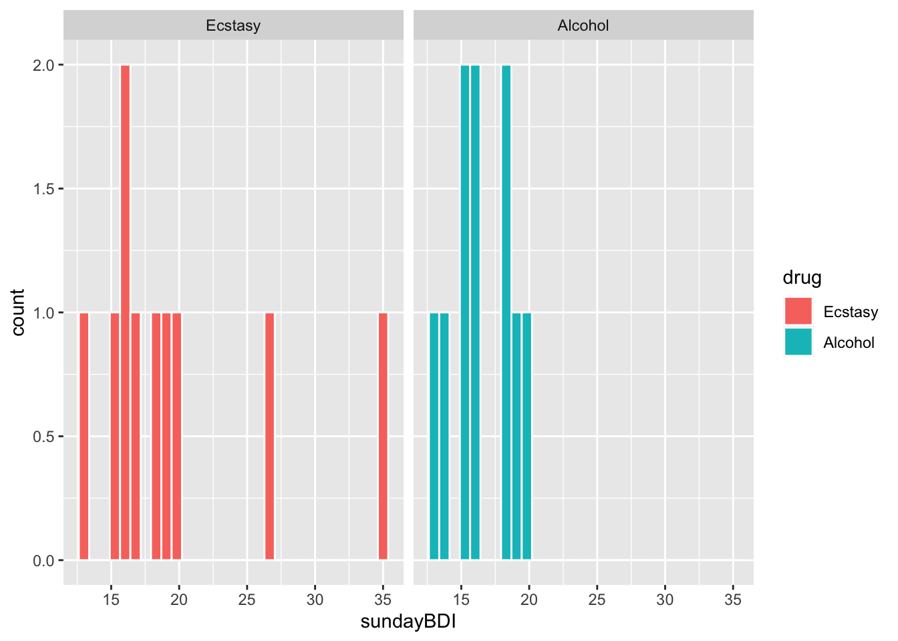
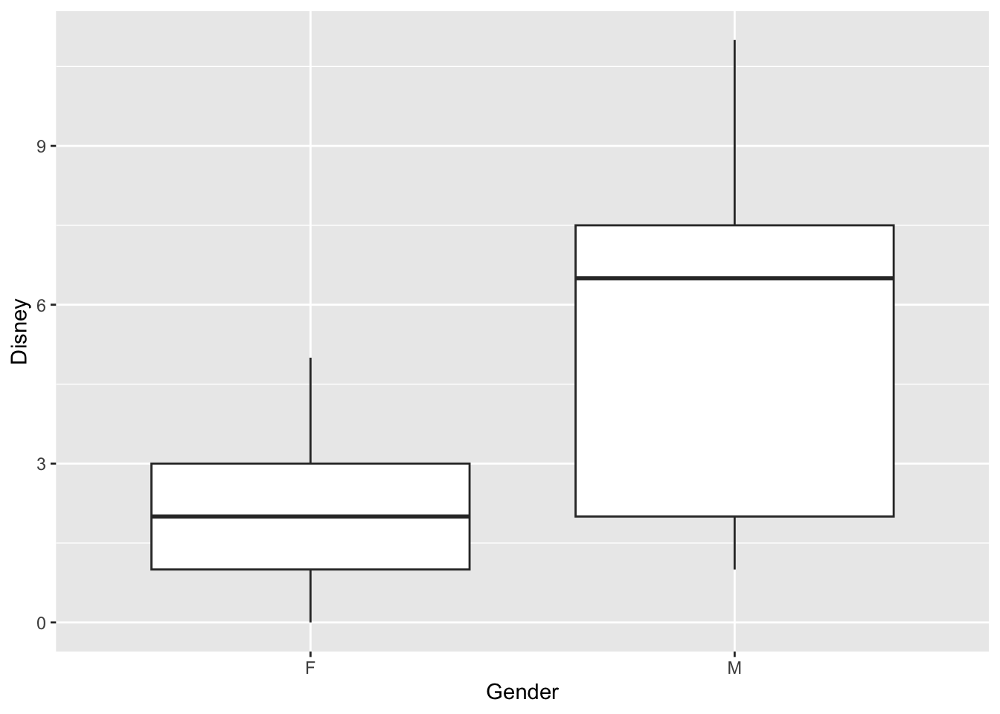
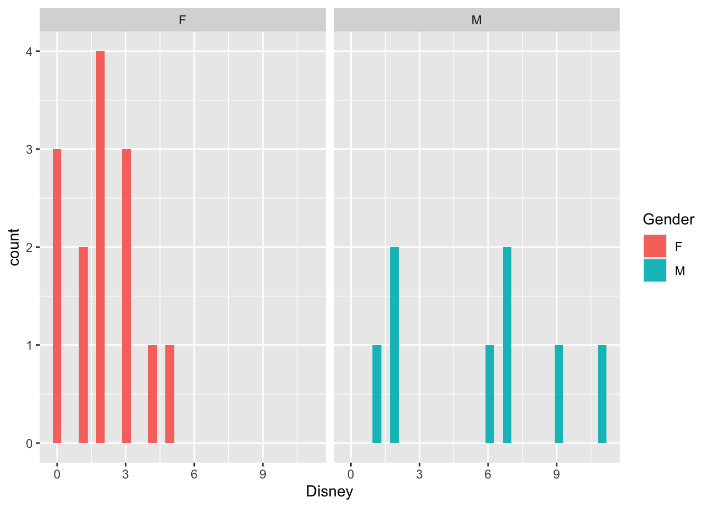
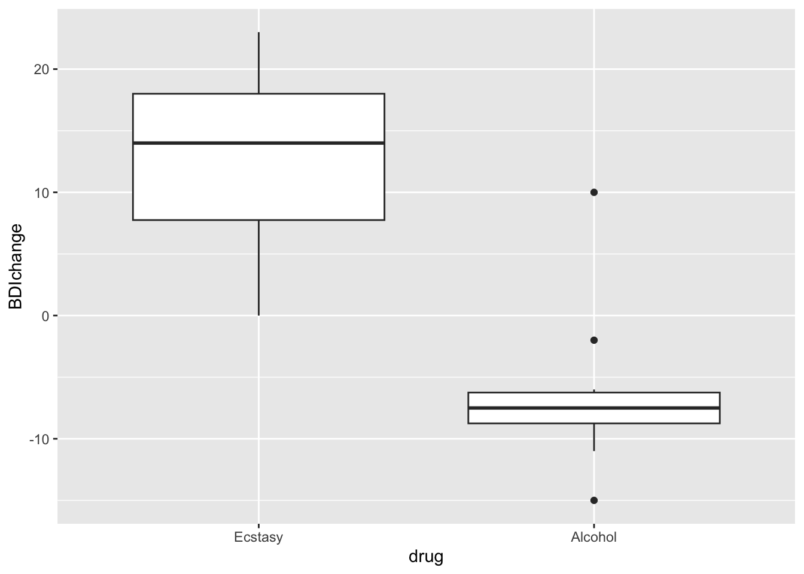
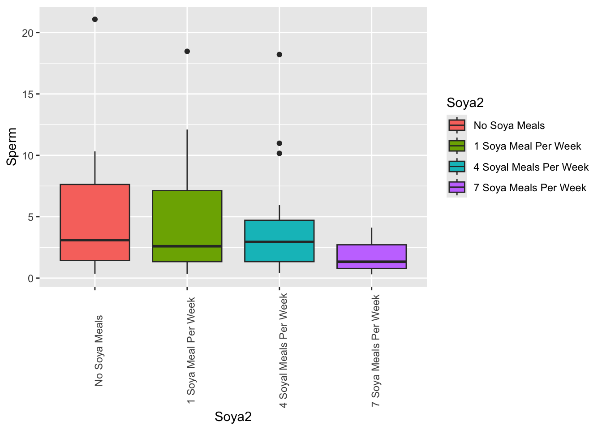

Capítulo 21 Pruebas No Paramétricas
21.1 Pruebas no paramétricas
Todas las pruebas anteriores asumen que los datos tienen ciertas características, como distribución normal y homogeneidad de varianza. Si los datos NO cumplen con estos supuestos, entonces no se deben usar esas pruebas y se deben explorar pruebas alternativas. Un conjunto de pruebas conocidas son las pruebas no paramétricas o pruebas libres de distribución.
Pruebas no paramétricas. Pruebas que no requieren que los datos sigan una distribución específica (como la normal). En vez de usar los valores originales, la mayoría trabaja con los rangos de los datos, lo que las hace robustas frente a valores atípicos y distribuciones sesgadas. Suelen probar hipótesis sobre la mediana o la distribución, no sobre la media.
La mayoría de estas pruebas no utilizan los datos originales, sino que emplean los rangos de los datos. Esto se hace asignando “nuevos valores” a los datos originales: el valor más bajo recibe el rango 1, el siguiente valor más bajo el rango 2, y así sucesivamente. De esta manera, el valor más alto obtiene el rango más alto.
Luego, el análisis se realiza sobre los rangos y NO sobre los valores originales.
¿Por qué esto reduce la influencia de valores extremos?
Al convertir los datos en rangos, se elimina la magnitud real de las diferencias entre valores. Un valor extremadamente grande o pequeño solo recibe el rango más alto o más bajo, sin afectar de manera desproporcionada el resultado del análisis. Esto hace que las pruebas no paramétricas sean más robustas frente a outliers y distribuciones sesgadas.
21.2 Los paquetes
#install.packages("car")
#install.packages("clinfun")
#install.packages("ggplot2")
#install.packages("pastecs")
#install.packages("pgirmess")21.4 Prueba de suma de rangos de Wilcoxon
La función “gl()” es una función que genera factores especificando el patrón de sus niveles:
gl(n, k, length = n*k, labels = 1:n, ordered = FALSE)
21.4.1 La hipótesis:
El nivel de depresión posterior al consumo de alcohol es el mismo que el de quienes consumen éxtasis.
¿Es esta la hipótesis nula o alternativa?
Los datos provienen de 20 participantes, 10 que bebieron alcohol y 10 que tomaron éxtasis. Después de su consumo, se aplicó el Inventario de Depresión de Beck a cada participante. El Inventario de Depresión de Beck (BDI) es un cuestionario autoinformado que evalúa la gravedad de la depresión en adolescentes y adultos. Consta de 21 ítems, cada uno con cuatro opciones de respuesta que reflejan diferentes niveles de síntomas depresivos. Cada ítem se puntúa de 0 a 3, y la puntuación total se obtiene sumando las puntuaciones de todos los ítems.
La escala va de 0 (feliz) a 63 (muy deprimido).
https://www.ismanet.org/doctoryourspirit/pdfs/Beck-Depression-Inventory-BDI.pdf
21.5 Ingresar los datos
sundayBDI<-c(15, 35, 16, 18, 19,
17, 27, 16, 13, 20,
16, 15, 20, 15, 16,
13, 14, 19, 18, 18)
wedsBDI<-c(28, 35, 35, 24, 39, 32,
27, 29, 36, 35, 5, 6,
30, 8, 9, 7, 6, 17,
3, 10)
drug<-gl(2, 10, labels = c("Ecstasy", "Alcohol"))
Gender=gl(2, 10, labels = c("Male", "Female"))
drugData<-data.frame(Gender, drug, sundayBDI, wedsBDI)
drugData| Gender | drug | sundayBDI | wedsBDI |
|---|---|---|---|
| Male | Ecstasy | 15 | 28 |
| Male | Ecstasy | 35 | 35 |
| Male | Ecstasy | 16 | 35 |
| Male | Ecstasy | 18 | 24 |
| Male | Ecstasy | 19 | 39 |
| Male | Ecstasy | 17 | 32 |
| Male | Ecstasy | 27 | 27 |
| Male | Ecstasy | 16 | 29 |
| Male | Ecstasy | 13 | 36 |
| Male | Ecstasy | 20 | 35 |
| Female | Alcohol | 16 | 5 |
| Female | Alcohol | 15 | 6 |
| Female | Alcohol | 20 | 30 |
| Female | Alcohol | 15 | 8 |
| Female | Alcohol | 16 | 9 |
| Female | Alcohol | 13 | 7 |
| Female | Alcohol | 14 | 6 |
| Female | Alcohol | 19 | 17 |
| Female | Alcohol | 18 | 3 |
| Female | Alcohol | 18 | 10 |
21.5.2 Análisis exploratorio
| drug | sundayBDI | wedsBDI |
|---|---|---|
| Ecstasy | 15 | 28 |
| Ecstasy | 35 | 35 |
| Ecstasy | 16 | 35 |
| Ecstasy | 18 | 24 |
| Ecstasy | 19 | 39 |
| Ecstasy | 17 | 32 |
21.5.3 Estadísticas descriptivas.
Nota: aquí podemos usar drugData[,c(2:3)], lo que indica que queremos las estadísticas para las columnas 2 y 3, y que estas estén separadas por la variable drug (columna 1).
NOTA: la prueba de Shapiro-Wilk en la última línea.
## [1] "Gender" "drug" "sundayBDI" "wedsBDI"## drugData$drug: Ecstasy
## sundayBDI wedsBDI
## nbr.val 10.00000000 10.0000000
## nbr.null 0.00000000 0.0000000
## nbr.na 0.00000000 0.0000000
## min 13.00000000 24.0000000
## max 35.00000000 39.0000000
## range 22.00000000 15.0000000
## sum 196.00000000 320.0000000
## median 17.50000000 33.5000000
## mean 19.60000000 32.0000000
## SE.mean 2.08806130 1.5129074
## CI.mean.0.95 4.72352283 3.4224344
## var 43.60000000 22.8888889
## std.dev 6.60302961 4.7842334
## coef.var 0.33688927 0.1495073
## skewness 1.23571300 -0.2191665
## skew.2SE 0.89929826 -0.1594999
## kurtosis 0.26030385 -1.4810114
## kurt.2SE 0.09754697 -0.5549982
## normtest.W 0.81063991 0.9411413
## normtest.p 0.01952060 0.5657814
## ------------------------------------------------------------
## drugData$drug: Alcohol
## sundayBDI wedsBDI
## nbr.val 10.00000000 1.000000e+01
## nbr.null 0.00000000 0.000000e+00
## nbr.na 0.00000000 0.000000e+00
## min 13.00000000 3.000000e+00
## max 20.00000000 3.000000e+01
## range 7.00000000 2.700000e+01
## sum 164.00000000 1.010000e+02
## median 16.00000000 7.500000e+00
## mean 16.40000000 1.010000e+01
## SE.mean 0.71802197 2.514182e+00
## CI.mean.0.95 1.62427855 5.687475e+00
## var 5.15555556 6.321111e+01
## std.dev 2.27058485 7.950542e+00
## coef.var 0.13845030 7.871823e-01
## skewness 0.11686189 1.500374e+00
## skew.2SE 0.08504701 1.091907e+00
## kurtosis -1.49015904 1.079110e+00
## kurt.2SE -0.55842624 4.043886e-01
## normtest.W 0.95946584 7.534665e-01
## normtest.p 0.77976459 3.933024e-03
#shapiro.test(drugData$sundayBDI) # this is to look at all the data, it is not the appropriate way to do the analisis of normality, why?
#shapiro.test(drugData$wedsBDI) # this is to look at all the data, it is not the appropriate way to do the analisis of normality, why?
shapiro.test(drugData$sundayBDI[drugData$drug=="Alcohol"])##
## Shapiro-Wilk normality test
##
## data: drugData$sundayBDI[drugData$drug == "Alcohol"]
## W = 0.95947, p-value = 0.7798
shapiro.test(drugData$sundayBDI[drugData$drug=="Ecstasy"])##
## Shapiro-Wilk normality test
##
## data: drugData$sundayBDI[drugData$drug == "Ecstasy"]
## W = 0.81064, p-value = 0.01952
shapiro.test(drugData$wedsBDI[drugData$drug=="Alcohol"])##
## Shapiro-Wilk normality test
##
## data: drugData$wedsBDI[drugData$drug == "Alcohol"]
## W = 0.75347, p-value = 0.003933
shapiro.test(drugData$wedsBDI[drugData$drug=="Ecstasy"])##
## Shapiro-Wilk normality test
##
## data: drugData$wedsBDI[drugData$drug == "Ecstasy"]
## W = 0.94114, p-value = 0.565821.5.4 Haz un diagrama para observar la distribución de los datos.
library(ggplot2)
ggplot(drugData, aes(x=sundayBDI, fill=drug))+
geom_histogram(colour="white")+
facet_grid(~drug)
21.5.5 Prueba de homogeneidad de varianzas de Levene
La prueba de Levene es una prueba estadística utilizada para evaluar la homogeneidad de varianzas entre dos o más grupos. Es una alternativa robusta a la prueba de Bartlett, especialmente cuando los datos no cumplen con la suposición de normalidad.
21.5.6 ¿Cuándo se usa?
Cuando se quiere comparar la variabilidad entre grupos antes de realizar pruebas que asumen varianzas iguales (como ANOVA). Cuando los datos no son normales o contienen outliers, ya que la prueba de Levene es menos sensible a estas condiciones.
library(DescTools)
#leveneTest(drugData$sundayBDI, drugData$drug, center = "mean")
DescTools::LeveneTest(drugData$sundayBDI, drugData$drug, center = "median")| Df | F value | Pr(>F) |
|---|---|---|
| 1 | 1.88 | 0.187 |
| 18 |
#leveneTest(drugData$wedsBDI, drugData$drug, center = "mean")
car::leveneTest(drugData$wedsBDI, drugData$drug, center = "median")| Df | F value | Pr(>F) |
|---|---|---|
| 1 | 0.0911 | 0.766 |
| 18 |
21.6 Prueba de suma de rangos de Wilcoxon (Mann-Whitney U)
La prueba de suma de rangos de Wilcoxon (también conocida como prueba de Mann-Whitney U) es una prueba no paramétrica utilizada para comparar dos muestras independientes y determinar si provienen de la misma distribución.
21.6.1 ¿Cuándo se usa?
Cuando se quiere comparar dos grupos independientes (por ejemplo, grupo control vs. grupo tratado). Los datos son ordinales o no cumplen los supuestos de normalidad requeridos por pruebas paramétricas como la t de Student. Se busca evaluar si las distribuciones son similares en ubicación (mediana).
21.6.2 Cómo funciona:
Combina los datos de ambos grupos y asigna rangos a todos los valores. Calcula la suma de rangos para cada grupo. El estadístico de prueba se basa en estas sumas y se compara con una distribución conocida para obtener el valor p.
21.6.3 Ejemplo de uso:
Comparar niveles de glucosa entre dos grupos de pacientes (tratamiento vs. placebo) cuando los datos no son normales. Evaluar diferencias en tiempos de reacción entre dos poblaciones.
wilcox.test(x, y = NULL, alternative = c(“two.sided”, “less”, “greater”), mu = 0, paired = FALSE, exact = FALSE, correct = FALSE, conf.level = 0.95, na.action = na.exclude)
21.7 Cómo asignar los rangos a mano (ejemplo; los scripts lo hacen automáticamente)
Busca el valor más pequeño… en wedsBDI…
drugData$wedsRank=rank(drugData$wedsBDI)
drugData| Gender | drug | sundayBDI | wedsBDI | wedsRank |
|---|---|---|---|---|
| Male | Ecstasy | 15 | 28 | 12 |
| Male | Ecstasy | 35 | 35 | 17 |
| Male | Ecstasy | 16 | 35 | 17 |
| Male | Ecstasy | 18 | 24 | 10 |
| Male | Ecstasy | 19 | 39 | 20 |
| Male | Ecstasy | 17 | 32 | 15 |
| Male | Ecstasy | 27 | 27 | 11 |
| Male | Ecstasy | 16 | 29 | 13 |
| Male | Ecstasy | 13 | 36 | 19 |
| Male | Ecstasy | 20 | 35 | 17 |
| Female | Alcohol | 16 | 5 | 2 |
| Female | Alcohol | 15 | 6 | 3.5 |
| Female | Alcohol | 20 | 30 | 14 |
| Female | Alcohol | 15 | 8 | 6 |
| Female | Alcohol | 16 | 9 | 7 |
| Female | Alcohol | 13 | 7 | 5 |
| Female | Alcohol | 14 | 6 | 3.5 |
| Female | Alcohol | 19 | 17 | 9 |
| Female | Alcohol | 18 | 3 | 1 |
| Female | Alcohol | 18 | 10 | 8 |
21.8 Prueba de Wilcoxon: una prueba no paramétrica
names(drugData)## [1] "Gender" "drug" "sundayBDI" "wedsBDI" "wedsRank"
head(drugData)| Gender | drug | sundayBDI | wedsBDI | wedsRank |
|---|---|---|---|---|
| Male | Ecstasy | 15 | 28 | 12 |
| Male | Ecstasy | 35 | 35 | 17 |
| Male | Ecstasy | 16 | 35 | 17 |
| Male | Ecstasy | 18 | 24 | 10 |
| Male | Ecstasy | 19 | 39 | 20 |
| Male | Ecstasy | 17 | 32 | 15 |
sunModel<-wilcox.test(sundayBDI ~ drug, data = drugData)
sunModel##
## Wilcoxon rank sum exact test
##
## data: sundayBDI by drug
## W = 64.5, p-value = 0.2882
## alternative hypothesis: true location shift is not equal to 0
wedModel<-wilcox.test(wedsBDI ~ drug, data = drugData)
wedModel##
## Wilcoxon rank sum exact test
##
## data: wedsBDI by drug
## W = 96, p-value = 0.0001299
## alternative hypothesis: true location shift is not equal to 021.9 El siguiente acercamiento es mejor porque puede manejar empates (valores iguales)
Cuando hay empates (valores iguales) en los datos, R no puede calcular el valor-p exacto y muestra una advertencia. En esos casos se añade exact = FALSE a wilcox.test() para usar la aproximación normal.
sunModel2<-wilcox.test(sundayBDI ~ drug, data = drugData, exact = FALSE, correct= FALSE, conf.int=T)
sunModel2##
## Wilcoxon rank sum test
##
## data: sundayBDI by drug
## W = 64.5, p-value = 0.2692
## alternative hypothesis: true location shift is not equal to 0
## 95 percent confidence interval:
## -1.000049 5.000033
## sample estimates:
## difference in location
## 1.000023
wedModel2<-wilcox.test(wedsBDI ~ drug, data = drugData, exact = FALSE, correct= FALSE, conf.int=T)
wedModel2##
## Wilcoxon rank sum test
##
## data: wedsBDI by drug
## W = 96, p-value = 0.0004943
## alternative hypothesis: true location shift is not equal to 0
## 95 percent confidence interval:
## 18.00001 28.99996
## sample estimates:
## difference in location
## 23.5528121.11 ¿Cuántas veces has ido a Disney? ¿Hay diferencia entre géneros?
Usa la prueba de Wilcoxon.
Disney=c(3,5,0,1,2,
0,2,0,2,3,
2,1,4, 3,
2, 1, 2, 6,7,
11, 7, 9)
Gender=c("F","F","F","F","F",
"F","F","F","F","F",
"F","F","F","F",
"M","M","M","M","M",
"M","M","M")
DF=data.frame(Disney,Gender)
DF| Disney | Gender |
|---|---|
| 3 | F |
| 5 | F |
| 0 | F |
| 1 | F |
| 2 | F |
| 0 | F |
| 2 | F |
| 0 | F |
| 2 | F |
| 3 | F |
| 2 | F |
| 1 | F |
| 4 | F |
| 3 | F |
| 2 | M |
| 1 | M |
| 2 | M |
| 6 | M |
| 7 | M |
| 11 | M |
| 7 | M |
| 9 | M |
ggplot(DF, aes(y=Disney, x=Gender))+
geom_boxplot()
ggplot(DF, aes(x=Disney, fill=Gender))+
geom_histogram()+
facet_grid(~Gender)
wilcox.test(Disney ~ Gender, data = DF,exact = FALSE, correct= FALSE, conf.int=T )##
## Wilcoxon rank sum test
##
## data: Disney by Gender
## W = 24, p-value = 0.02681
## alternative hypothesis: true location shift is not equal to 0
## 95 percent confidence interval:
## -6.999942e+00 -2.032046e-05
## sample estimates:
## difference in location
## -3.99993621.12 Comparar dos condiciones relacionadas: la prueba de rangos con signo de Wilcoxon (similar a la prueba de t pareada)
21.12.1 No confundir con la prueba de suma de rangos de Wilcoxon (Mann-Whitney U), que es similar a la prueba de t no pareada
La prueba no paramétrica más común para datos pareados es la Prueba de rangos con signo de Wilcoxon.
21.12.2 ¿Qué es y cuándo se usa?
- Se utiliza para comparar dos muestras relacionadas (por ejemplo, mediciones antes y después en los mismos individuos).
- Es una alternativa a la t de Student para muestras dependientes cuando los datos no cumplen normalidad o son ordinales.
- Evalúa si la mediana de las diferencias entre los pares es cero.
21.12.3 Características principales:
- Ordena las diferencias absolutas entre pares y les asigna rangos.
- Considera el signo (+/-) de cada diferencia.
- Calcula la suma de rangos positivos y negativos para determinar si hay diferencia significativa.
21.12.4 Ejemplo típico:
- Comparar presión arterial antes y después de un tratamiento en los mismos pacientes.
- Evaluar el efecto de una intervención educativa en el mismo grupo.
Ahora queremos comparar los resultados del domingo y del miércoles, pero esta vez los datos provienen de los mismos individuos.
21.13 Cambio en el BDI (Índice de Depresión de Beck)
drugData$BDIchange<-drugData$wedsBDI-drugData$sundayBDI # calculate differences
drugData$BDIchange## [1] 13 0 19 6 20 15 0 13 23 15 -11 -9 10 -7 -7 -6 -8 -2 -15
## [20] -8
head(drugData)| Gender | drug | sundayBDI | wedsBDI | wedsRank | BDIchange |
|---|---|---|---|---|---|
| Male | Ecstasy | 15 | 28 | 12 | 13 |
| Male | Ecstasy | 35 | 35 | 17 | 0 |
| Male | Ecstasy | 16 | 35 | 17 | 19 |
| Male | Ecstasy | 18 | 24 | 10 | 6 |
| Male | Ecstasy | 19 | 39 | 20 | 20 |
| Male | Ecstasy | 17 | 32 | 15 | 15 |
drugData| Gender | drug | sundayBDI | wedsBDI | wedsRank | BDIchange |
|---|---|---|---|---|---|
| Male | Ecstasy | 15 | 28 | 12 | 13 |
| Male | Ecstasy | 35 | 35 | 17 | 0 |
| Male | Ecstasy | 16 | 35 | 17 | 19 |
| Male | Ecstasy | 18 | 24 | 10 | 6 |
| Male | Ecstasy | 19 | 39 | 20 | 20 |
| Male | Ecstasy | 17 | 32 | 15 | 15 |
| Male | Ecstasy | 27 | 27 | 11 | 0 |
| Male | Ecstasy | 16 | 29 | 13 | 13 |
| Male | Ecstasy | 13 | 36 | 19 | 23 |
| Male | Ecstasy | 20 | 35 | 17 | 15 |
| Female | Alcohol | 16 | 5 | 2 | -11 |
| Female | Alcohol | 15 | 6 | 3.5 | -9 |
| Female | Alcohol | 20 | 30 | 14 | 10 |
| Female | Alcohol | 15 | 8 | 6 | -7 |
| Female | Alcohol | 16 | 9 | 7 | -7 |
| Female | Alcohol | 13 | 7 | 5 | -6 |
| Female | Alcohol | 14 | 6 | 3.5 | -8 |
| Female | Alcohol | 19 | 17 | 9 | -2 |
| Female | Alcohol | 18 | 3 | 1 | -15 |
| Female | Alcohol | 18 | 10 | 8 | -8 |
by(drugData$BDIchange, drugData$drug, stat.desc, basic = FALSE, norm = TRUE)## drugData$drug: Ecstasy
## median mean SE.mean CI.mean.0.95 var std.dev
## 14.0000000 12.4000000 2.5307004 5.7248420 64.0444444 8.0027773
## coef.var skewness skew.2SE kurtosis kurt.2SE normtest.W
## 0.6453853 -0.4140842 -0.3013525 -1.3686700 -0.5128991 0.9087803
## normtest.p
## 0.2727175
## ------------------------------------------------------------
## drugData$drug: Alcohol
## median mean SE.mean CI.mean.0.95 var std.dev
## -7.50000000 -6.30000000 2.09788253 4.74573999 44.01111111 6.63408706
## coef.var skewness skew.2SE kurtosis kurt.2SE normtest.W
## -1.05302969 1.23907117 0.90174219 0.98664006 0.36973617 0.82795980
## normtest.p
## 0.03161929
shapiro.test(drugData$BDIchange[drugData$drug=="Alcohol"])##
## Shapiro-Wilk normality test
##
## data: drugData$BDIchange[drugData$drug == "Alcohol"]
## W = 0.82796, p-value = 0.03162
shapiro.test(drugData$BDIchange[drugData$drug=="Ecstasy"])##
## Shapiro-Wilk normality test
##
## data: drugData$BDIchange[drugData$drug == "Ecstasy"]
## W = 0.90878, p-value = 0.2727
boxplot<-ggplot(drugData, aes(drug, BDIchange)) +
geom_boxplot()
boxplot
#alcoholData<-subset(drugData, drug == "Alcohol") # subset the data for alcohol
#ecstasyData<-subset(drugData, drug == "Ecstasy") # subset the data for ecstasy
library(tidyverse)
alcoholData = drugData %>%
filter(drug == "Alcohol")
ecstasyData = drugData %>%
filter(drug == "Ecstasy")
alcoholModel<-wilcox.test(alcoholData$wedsBDI, alcoholData$sundayBDI, paired = TRUE, exact = TRUE, correct= FALSE)
alcoholModel##
## Wilcoxon signed rank exact test
##
## data: alcoholData$wedsBDI and alcoholData$sundayBDI
## V = 8, p-value = 0.04492
## alternative hypothesis: true location shift is not equal to 0
ecstasyModel<-wilcox.test(ecstasyData$wedsBDI, ecstasyData$sundayBDI, paired = TRUE, exact = FALSE,correct= FALSE) # Note that the option "exact=FALSE" has to be added becase there are ties.
ecstasyModel##
## Wilcoxon signed rank test
##
## data: ecstasyData$wedsBDI and ecstasyData$sundayBDI
## V = 36, p-value = 0.01151
## alternative hypothesis: true location shift is not equal to 021.14 Prueba de Kruskal-Wallis
Equivalencias no paramétricas: la prueba de suma de rangos de Wilcoxon (Mann-Whitney U) es la alternativa a la t independiente; la prueba de rangos con signo de Wilcoxon es la alternativa a la t pareada; y la prueba de Kruskal-Wallis es la alternativa al ANOVA de una vía.
Es una prueba similar al ANOVA, para múltiples grupos (3 o más).
Sin embargo, se evalúan las diferencias para determinar si el rango entre los grupos es diferente (no la media).
La hipótesis nula es que la suma (o el promedio) de los rangos es igual entre los grupos, Ho: G1 = G2 = G3 … Gk. La hipótesis alterna es que por lo menos el “rango promedio” de uno de los grupos es diferente del de otro.
La prueba de Kruskal-Wallis es una prueba no paramétrica que se utiliza para comparar tres o más grupos independientes y determinar si provienen de la misma distribución. Es la alternativa no paramétrica al ANOVA de una vía cuando los datos:
21.14.1 No tiene que cumplir el supuesto de normalidad o igualdad de varianza.
Son ordinales o no se puede asumir homogeneidad de varianzas.
21.14.2 ¿Cómo funciona?
Combina todos los datos y les asigna rangos. Calcula la suma de rangos para cada grupo. Usa un estadístico basado en estas sumas para evaluar si las medianas de los grupos son iguales.
21.15 La soya y su efecto sobre la producción de esperma en varones humanos
21.15.1 Soy food and isoflavone intake in relation to semen quality parameters among men from an infertility clinic
Jorge E. Chavarro Thomas L. Toth Sonita M. Sadio Russ Hauser Hum Reprod. 2008 Nov;23(11):2584-90. doi: 10.1093/humrep/den243. Epub 2008 Jul 23.
El estudio encontró que la concentración de esperma es menor en los varones que consumen más soya. A continuación se reproduce el resumen (Abstract) original del artículo.
21.16 Abstract
21.16.1 BACKGROUND:
High isoflavone intake has been related to decreased fertility in animal studies, but data in humans are scarce. Thus, we examined the association of soy foods and isoflavones intake with semen quality parameters.
21.16.2 METHODS:
The intake of 15 soy-based foods in the previous 3 months was assessed for 99 male partners of subfertile couples who presented for semen analyses to the Massachusetts General Hospital Fertility Center. Linear and quantile regression were used to determine the association of soy foods and isoflavones intake with semen quality parameters while adjusting for personal characteristics.
21.16.3 RESULTS:
There was an inverse association between soy food intake and sperm concentration that remained significant after accounting for age, abstinence time, body mass index, caffeine and alcohol intake and smoking. In the multivariate-adjusted analyses, men in the highest category of soy food intake had 41 million sperm/ml less than men who did not consume soy foods (95% confidence interval = -74, -8; P, trend = 0.02). Results for individual soy isoflavones were similar to the results for soy foods and were strongest for glycitein, but did not reach statistical significance. The inverse relation between soy food intake and sperm concentration was more pronounced in the high end of the distribution (90th and 75th percentile) and among overweight or obese men. Soy food and soy isoflavone intake were unrelated to sperm motility, sperm morphology or ejaculate volume.
21.16.4 CONCLUSIONS:
These data suggest that higher intake of soy foods and soy isoflavones is associated with lower sperm concentration.
Ahora veamos los datos de Field, soya.csv.
| Soya | Sperm |
|---|---|
| No Soya Meals | 0.35 |
| No Soya Meals | 0.58 |
| No Soya Meals | 0.88 |
| No Soya Meals | 0.92 |
| No Soya Meals | 1.22 |
| No Soya Meals | 1.51 |
unique(Soyadf$Soya)## [1] "No Soya Meals" "1 Soya Meal Per Week" "4 Soyal Meals Per Week"
## [4] "7 Soya Meals Per Week"21.17 Hacer un boxplot de los datos en un nuevo chunk
Reordena el eje x para que los niveles vayan de menor a mayor consumo de soya (de ninguno a alto).
## [1] "No Soya Meals" "1 Soya Meal Per Week" "4 Soyal Meals Per Week"
## [4] "7 Soya Meals Per Week"
Soyadf$Soya2 <- factor(Soyadf$Soya, levels = c("No Soya Meals",
"1 Soya Meal Per Week",
"4 Soyal Meals Per Week",
"7 Soya Meals Per Week"))
ggplot(Soyadf, aes(x=Soya2, y=Sperm, fill=Soya2))+
geom_boxplot()+
theme(axis.text.x = element_text(angle = 90))
Estadística descriptiva
Usa la función by() para obtener las estadísticas de cada grupo. Al añadir “norm=TRUE” se realiza la prueba de normalidad de Shapiro-Wilk.
## Soyadf$Soya: 1 Soya Meal Per Week
## median mean SE.mean CI.mean.0.95 var std.dev
## 2.595000000 4.606000000 1.044821919 2.186837409 21.833056842 4.672585670
## coef.var skewness skew.2SE kurtosis kurt.2SE normtest.W
## 1.014456290 1.350565932 1.318645901 1.422731699 0.716825470 0.825831600
## normtest.p
## 0.002153894
## ------------------------------------------------------------
## Soyadf$Soya: 4 Soyal Meals Per Week
## median mean SE.mean CI.mean.0.95 var std.dev
## 2.945000e+00 4.110500e+00 9.861233e-01 2.063980e+00 1.944878e+01 4.410078e+00
## coef.var skewness skew.2SE kurtosis kurt.2SE normtest.W
## 1.072881e+00 1.822237e+00 1.779169e+00 2.792615e+00 1.407024e+00 7.427433e-01
## normtest.p
## 1.359072e-04
## ------------------------------------------------------------
## Soyadf$Soya: 7 Soya Meals Per Week
## median mean SE.mean CI.mean.0.95 var std.dev
## 1.3350000 1.6535000 0.2479774 0.5190226 1.2298555 1.1089885
## coef.var skewness skew.2SE kurtosis kurt.2SE normtest.W
## 0.6706916 0.6086712 0.5942855 -0.9161653 -0.4615984 0.9122606
## normtest.p
## 0.0703908
## ------------------------------------------------------------
## Soyadf$Soya: No Soya Meals
## median mean SE.mean CI.mean.0.95 var std.dev
## 3.095000000 4.987000000 1.136926165 2.379613812 25.852022105 5.084488382
## coef.var skewness skew.2SE kurtosis kurt.2SE normtest.W
## 1.019548502 1.546140856 1.509598499 2.328051363 1.172959394 0.805255802
## normtest.p
## 0.00103591721.18 La prueba de Kruskal-Wallis es similar a un ANOVA, sin asumir distribución normal ni igualdad de varianza
HO: R1 = R2 = R3 = R4 HA: Por lo menos uno de los grupos es diferente.
# Traditional approach
kruskal.test(Sperm~as.factor(Soya), data=Soyadf)##
## Kruskal-Wallis rank sum test
##
## data: Sperm by as.factor(Soya)
## Kruskal-Wallis chi-squared = 8.6589, df = 3, p-value = 0.0341921.19 Un mejor acercamiento: el paquete “coin”
Este acercamiento es mejor porque usa simulación para calcular la distribución del estadístico de prueba bajo la hipótesis nula.
La prueba aproximativa (Monte Carlo) de Fisher-Pitman es una prueba no paramétrica basada en permutaciones que se utiliza para comparar dos muestras independientes. Es una alternativa a la prueba de rangos de Wilcoxon o a la prueba t cuando se quiere evitar hacer supuestos sobre la distribución subyacente.
21.19.1 Características principales
- Propósito: Verifica si dos grupos provienen de la misma distribución (generalmente se enfoca en la ubicación/media).
- Enfoque: Utiliza permutaciones aleatorias (simulación Monte Carlo) para aproximar la distribución exacta del estadístico bajo la hipótesis nula.
- ¿Por qué Monte Carlo? Para tamaños de muestra grandes, calcular todas las permutaciones posibles es inviable, por lo que se toman muchas permutaciones aleatorias para estimar el valor p.
21.19.2 Cómo funciona
- Se calcula la diferencia observada entre las medias (u otro estadístico) de los dos grupos.
- Se combinan todas las observaciones y se reordenan aleatoriamente muchas veces (por ejemplo, 10,000 permutaciones).
- En cada permutación, se calcula la diferencia de medias y se construye una distribución.
- El valor p se obtiene como la proporción de permutaciones donde la diferencia simulada es igual o más extrema que la diferencia observada.
21.19.3 Ventajas
- No requiere supuestos de normalidad ni varianzas iguales.
- Funciona bien con tamaños de muestra pequeños o moderados.
- Flexible y robusta.
library(coin)
#Approximative (Monte Carlo) Fisher-Pitman test
modelkt=kruskal_test(Sperm~as.factor(Soya), data=Soyadf, distribution = approximate(nresample = 10000))
modelkt##
## Approximative Kruskal-Wallis Test
##
## data: Sperm by
## as.factor(Soya) (1 Soya Meal Per Week, 4 Soyal Meals Per Week, 7 Soya Meals Per Week, No Soya Meals)
## chi-squared = 8.6589, p-value = 0.034521.20 Para ver los rangos y las medianas por grupo
| Soya | Sperm | Soya2 | Ranks |
|---|---|---|---|
| No Soya Meals | 0.35 | No Soya Meals | 4 |
| No Soya Meals | 0.58 | No Soya Meals | 9 |
| No Soya Meals | 0.88 | No Soya Meals | 17 |
| No Soya Meals | 0.92 | No Soya Meals | 18 |
| No Soya Meals | 1.22 | No Soya Meals | 22 |
| No Soya Meals | 1.51 | No Soya Meals | 30 |
by(Soyadf$Ranks, Soyadf$Soya, median)## Soyadf$Soya: 1 Soya Meal Per Week
## [1] 43
## ------------------------------------------------------------
## Soyadf$Soya: 4 Soyal Meals Per Week
## [1] 48.5
## ------------------------------------------------------------
## Soyadf$Soya: 7 Soya Meals Per Week
## [1] 25.5
## ------------------------------------------------------------
## Soyadf$Soya: No Soya Meals
## [1] 50.5Prueba post hoc tipo Tukey (prueba de Nemenyi). Los valores que se muestran son los valores-p; el par es significativamente diferente si el p está por debajo de 0.05.
21.20.1 Nota
La prueba post hoc tipo Tukey (prueba de Nemenyi) es un método no paramétrico utilizado para realizar comparaciones múltiples entre grupos después de aplicar la prueba de Kruskal-Wallis (o Friedman, según el caso).
21.20.2 ¿Para qué sirve?
- Cuando la prueba global (Kruskal-Wallis) indica diferencias significativas entre tres o más grupos, la prueba de Nemenyi permite identificar qué pares de grupos difieren.
- Es la alternativa no paramétrica al Tukey HSD que se usa en ANOVA.
21.20.3 Características principales
- Se basa en las diferencias de rangos promedio entre los grupos.
- Utiliza una distribución basada en la estadística de Studentizada para calcular el valor crítico.
- Controla el error tipo I en comparaciones múltiples.
21.20.4 Hipótesis
- H₀: No hay diferencia entre los grupos comparados.
- H₁: Existe diferencia significativa entre al menos dos grupos.
21.20.5 Cuándo se aplica
- Después de una prueba de Kruskal-Wallis significativa.
- Datos ordinales o no normales, con k ≥ 3 grupos independientes.
library(PMCMRplus)
# Alternative 1
kwAllPairsNemenyiTest(Sperm~as.factor(Soya) , data=Soyadf)## 1 Soya Meal Per Week 4 Soyal Meals Per Week
## 4 Soyal Meals Per Week 1.000 -
## 7 Soya Meals Per Week 0.101 0.101
## No Soya Meals 0.991 0.991
## 7 Soya Meals Per Week
## 4 Soyal Meals Per Week -
## 7 Soya Meals Per Week -
## No Soya Meals 0.048
# Alternative 2
model1=kwAllPairsNemenyiTest(Sperm~as.factor(Soya) , data=Soyadf) # para más detalles
summary(model1)## q value Pr(>|q|)
## 4 Soyal Meals Per Week - 1 Soya Meal Per Week == 0 0.000 1.000000
## 7 Soya Meals Per Week - 1 Soya Meal Per Week == 0 3.233 0.101209
## No Soya Meals - 1 Soya Meal Per Week == 0 0.423 0.990680
## 7 Soya Meals Per Week - 4 Soyal Meals Per Week == 0 3.233 0.101209
## No Soya Meals - 4 Soyal Meals Per Week == 0 0.423 0.990680
## No Soya Meals - 7 Soya Meals Per Week == 0 3.657 0.047845 *
# Try "Chi Square" = Chisq